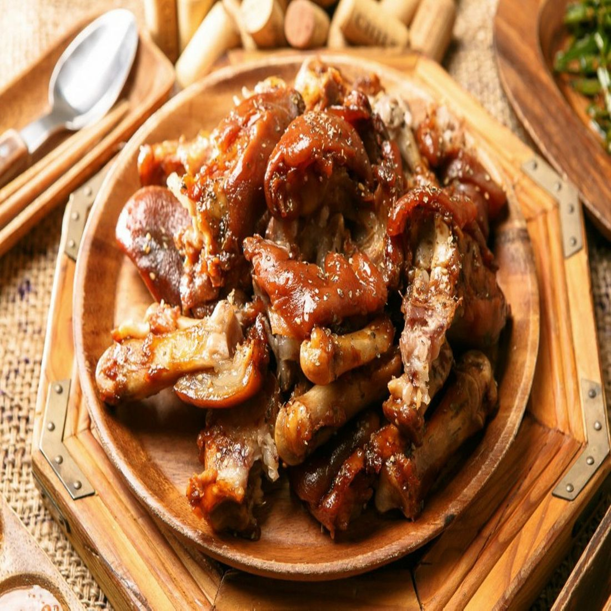
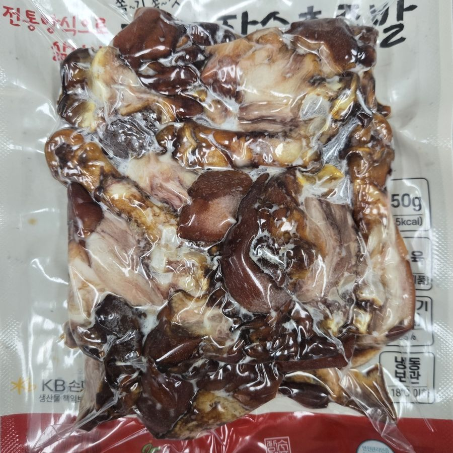
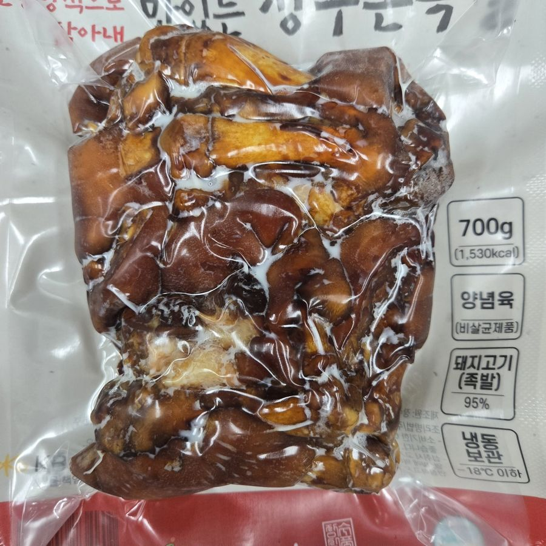
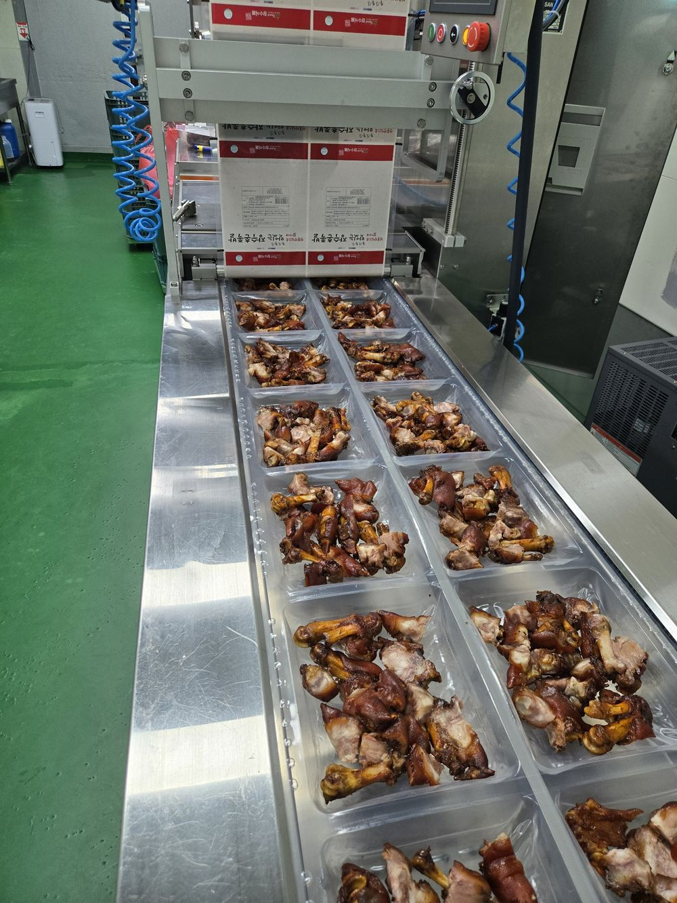
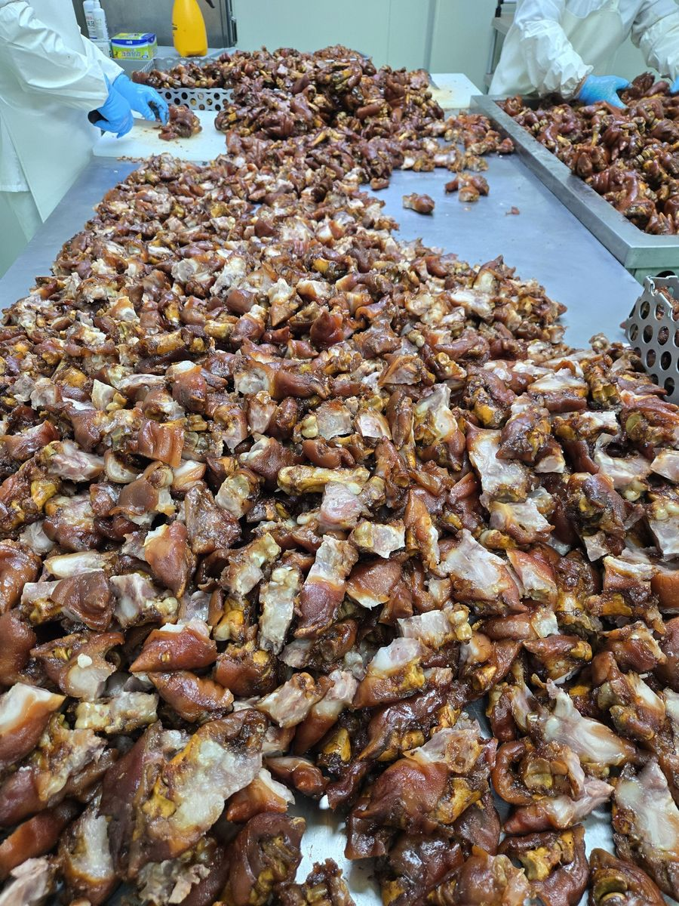
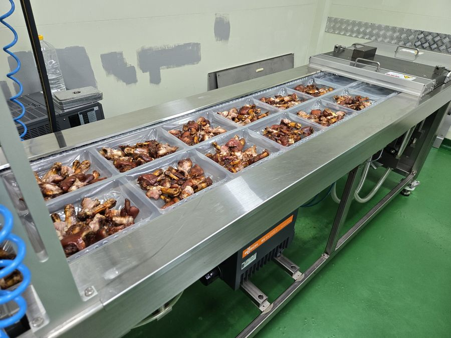
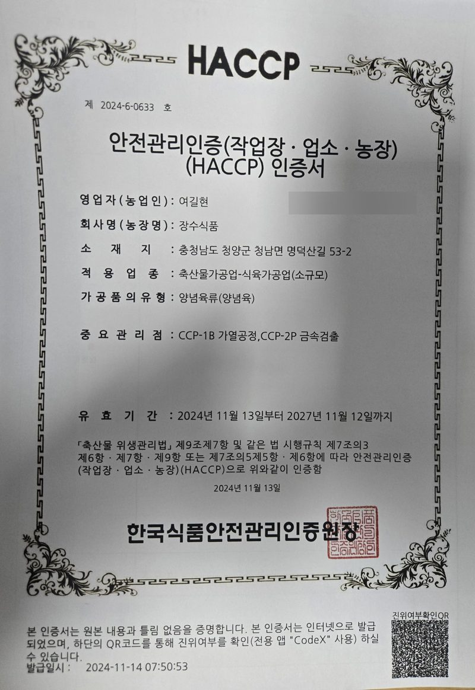

충남 청양 · 족발 제조 · 업소용 납품
직접 삶고, 바로 진공포장한 장수촌 미니족발
청양 공장에서 손질부터 삶기, 진공포장까지 한곳에서 끝냅니다. 식당에는 일정한 품질로 납품하고, 집에서는 데우기만 하면 됩니다.

회사 소개
족발 한 가지를 오래 만들어 온 회사
장수식품은 충남 청양에서 족발을 생산하는 HACCP 인증 식육가공 공장입니다. 원료 손질, 삶기, 양념, 포장을 모두 공장 안에서 직접 하고, 식자재 유통사·프랜차이즈·일반 식당과 온라인 고객에게 공급합니다.
2012년 청양에서 문을 열었고, 2017년 충청남도 축산물가공업(식육가공업) 허가(제2017-0448026호)를 받아 지금까지 같은 자리에서 족발을 만들고 있습니다.

만드는 사람
아버지가 세운 기준을 아들이 이어갑니다
장수식품은 2012년 아버지가 청양에 문을 연 족발 공장입니다. 손질부터 삶기, 포장까지 하나도 건너뛰지 않고 직접 하는 방식은 그때부터 지금까지 그대로입니다.
저희 집 기준은 하나입니다. 내 가족에게 먹이지 못할 족발은 공장 문을 나서지 않습니다. 저는 그 기준을 지키면서, 매장 사장님은 데우기만 해도 자신 있게 내고 집에서 드시는 분은 언제나 같은 맛을 만나도록 만들겠습니다.
장수식품 2대 운영대표 여운도
제품
매장 메뉴 구성에 맞춘 규격
썰어서 바로 내는 제품과 통으로 받아 매장에서 써는 제품으로 나뉩니다. 모두 냉동으로 보관·배송합니다.

썬 제품미니족발 350g · 525g
한입 크기로 썰어 팩에 담았습니다. 데우기만 하면 바로 냅니다. 350g은 1인 야식·사이드, 525g은 2인 메뉴·술안주용.

통 제품미니족발 700g
썰지 않은 통 제품입니다. 매장에서 원하는 크기로 직접 썰어 냅니다.
 순살
순살순살족발 300g
뼈를 발라낸 통살 제품입니다. 손질 없이 썰어 바로 담을 수 있어 배달·포장 메뉴에 좋습니다.
생산·위생
삶은 직후 진공포장해서 맛이 그대로 갑니다
열성형 진공포장기로 팩을 그 자리에서 성형하고 밀봉합니다. 공기 접촉이 줄어 냉동 중에도 마르거나 냄새가 배지 않습니다.


손질
해동한 원료육의 털과 이물을 하나씩 제거합니다.

삶기·커팅
자체 양념으로 삶아 색과 윤기를 내고, 한입 크기로 썹니다. 가열 공정은 HACCP 중요관리점으로 관리합니다.

계량
한 팩씩 저울에 달아 정량을 맞춥니다.

진공포장·출고
열성형 진공포장기로 밀봉하고 금속검출을 거쳐 냉동 출고합니다.

HACCP 인증 (제2024-6-0633호)
축산물가공업 · 식육가공업. 중요관리점은 가열공정과 금속검출입니다. 유효기간 2027년 11월 12일까지. 인증서를 누르면 크게 볼 수 있습니다.
납품 문의
업소용 족발 납품, 샘플부터 받아보고 결정하세요
칼국수·국밥·해장국집, 야식 매장, 식자재 유통사 모두 납품합니다. 단가표는 문의 주시면 따로 보내드립니다. 납품 안내 자세히 보기 →
| 배송 | 전국 택배 (청양 공장 발송) |
|---|---|
| 택배 1박스 | 350g 35팩 · 525g 25팩 · 700g 20팩 · 순살 35팩 |
| 택배 주문 | 필요한 수량만큼 자유롭게 |
| 샘플 | 원하는 품목 소량 구매 가능 (택배비 별도) |
| 정산 | 거래명세서 발행, 전자세금계산서 발행 |
전화 상담 042-523-9045 · 9046 · 9047 · 팩스 042-523-9048
자주 묻는 질문
족발 납품, 이런 점이 궁금하시죠
소량도 납품받을 수 있나요?
네. 택배 주문은 필요한 수량만큼 자유롭게 주문하실 수 있습니다. 택배비는 박스당 5,500원(부가세 포함)이며, 박스에 들어가는 수량은 350g 35팩, 525g 25팩, 700g 20팩, 순살 35팩입니다.
최소 주문 수량이 있나요?
최소 수량 없이 필요한 만큼 주문하실 수 있습니다. 모든 주문은 청양 공장에서 택배로 발송합니다.
샘플을 먼저 받아볼 수 있나요?
네. 원하는 품목을 소량으로 구매해 먼저 맛보실 수 있습니다(택배비 별도). 문의 양식이나 전화(042-523-9045)로 품목과 주소를 알려주세요.
납품 단가는 어떻게 되나요?
품목별로 다릅니다. 문의 주시면 단가표를 따로 보내드립니다.
언제 발송되나요?
월~금 오후 3시 전에 발주와 입금이 확인되면 당일 발송합니다. 그 이후 주문과 주말 주문은 다음 영업일에 발송합니다. 모든 주문은 청양 공장에서 택배로 나갑니다.
보관과 유통기한은 어떻게 되나요?
영하 18℃ 이하 냉동 보관 제품이며, 제조일로부터 1년입니다. 진공포장이라 냉동 중에도 마르거나 냄새가 배지 않습니다.
매장에서 어떻게 조리하나요?
이미 삶아 양념한 제품이라 해동 후 데우기만 하면 됩니다. 썬 제품(350g·525g)은 바로 담아내고, 통 제품(700g)은 매장에서 원하는 크기로 썰어 냅니다.
원산지와 인증은요?
원료육은 수입산이며 원산지는 포장에 표시됩니다. 충남 청양 공장은 HACCP 인증(제2024-6-0633호)을 받았고, 가열 공정과 금속 검출을 중요관리점으로 관리합니다.
세금계산서 발행이 되나요?
네. 거래명세서와 전자세금계산서를 발행합니다.